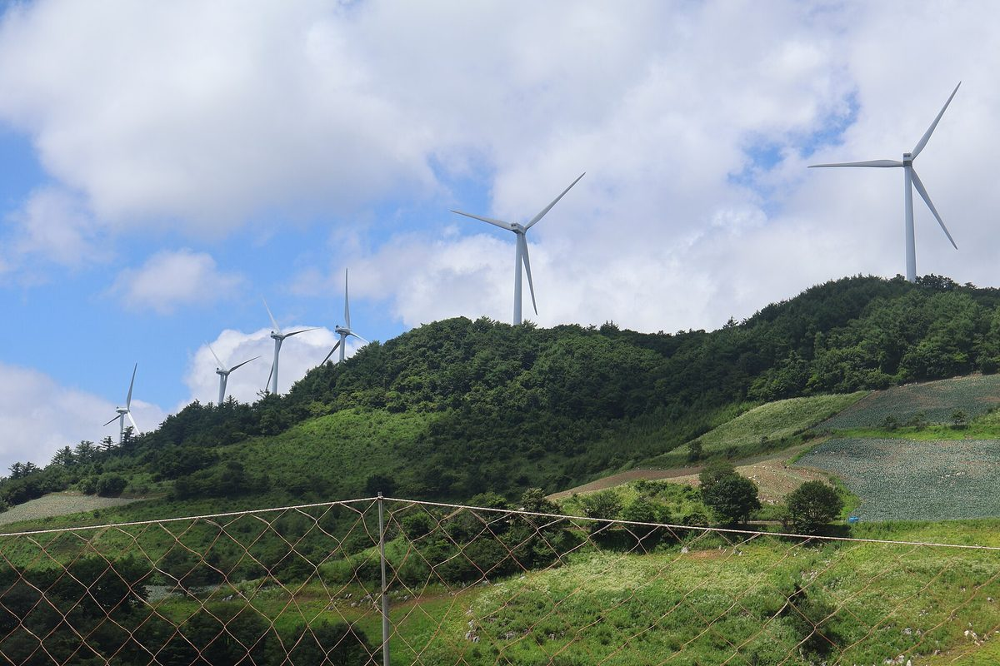

평창군, 월 15만 원 '평창형 기본소득' 재원으로 풍력·태양광 수익 꼽아…민선 9기 안 지급 목표

정부 농어촌 기본소득 공모 국·도비와 신재생에너지 사업 수익을 함께 쓰는 '투트랙' 구상, 8월 군청에 에너지전략 TF…공모 선정 여부·발전 수익 규모·재원 구조는 아직 안 나와
강원 평창군이 모든 군민에게 매월 15만 원을 주는 '평창형 기본소득'을 추진하면서 재원의 한 축을 풍력·태양광 발전 사업 수익으로 삼겠다는 구상을 29일 밝혔다. 군은 정부 농어촌 기본소득 공모에 선정돼 받는 국·도비와 신재생에너지 사업에서 거둔 수익을 함께 쓰는 '투트랙'으로 돈을 마련해 민선 9기 임기 안에 기본소득을 지급한다는 목표를 세웠다. 전체 면적의 80% 이상이 산지라 바람과 햇빛으로 재원을 만들 수 있다고 보고, 지난 8월 군청 안에 에너지전략 태스크포스(TF)를 꾸렸다. 기본소득으로 늘어난 돈이 지역 안에서 돌도록 평창사랑상품권 연간 발행액도 올해 220억 원에서 2027년 240억 원, 2028년 260억 원, 2029년 300억 원으로 늘릴 계획이다. 심재국 평창군수는 "발전사업으로 안정적인 재원을 확보해 지속 가능한 기본소득 모델을 만들어가겠다"고 말했다. 다만 군은 공모에 선정됐는지, 어느 발전 사업에서 얼마를 끌어올지, 군이 직접 발전하는지 지분 배당을 받는지 같은 재원 구조와 한 해 필요한 예산은 밝히지 않았다.
시민에너지 관점
모든 군민에게 월 15만 원을 주려면 해마다 끊기지 않는 돈줄이 있어야 하는데, 산지가 80%를 넘는 땅의 바람과 햇빛을 그 돈줄로 삼겠다는 것은 공유자원에서 나온 이익을 주민 전체에게 돌려주는 방향과 맞닿아 있다. 미국 알래스카주가 1982년부터 석유 수입을 쌓은 기금의 운용 수익으로 모든 주민에게 해마다 배당을 주듯, 자원에서 나온 돈을 따로 묶어 두는 장치가 있어야 군수가 바뀌어도 약속이 이어진다. 발전 사업자가 내놓는 협약금이나 기부금에 기대면 사업자 사정에 따라 재원이 흔들릴 수 있다는 우려가 나올 수 있지만, 군과 주민이 발전소 지분을 직접 가지면 수익은 해마다 들어오는 마을의 자산이 된다. 평창군은 에너지전략 TF가 다룰 사업 목록과 군·주민 지분, 그중 기본소득에 들어갈 몫부터 군민 앞에 내놓아야 한다.
출처: 서울신문 2026-10-29 김정호 원문 보기
출처: 서울신문(심재국 평창군수 인터뷰) 2026-10-29 김정호 원문 보기
江原道平昌郡、月15万ウォンの「平昌型ベーシックインカム」の財源に風力・太陽光の収益…民選9期中の支給目標
政府の農漁村ベーシックインカム公募による国・道の補助金と再生可能エネルギー事業の収益を併用する「ツートラック」構想、8月に郡庁にエネルギー戦略TF…公募選定の可否・発電収益の規模・財源構造はまだ示されず
韓国江原道平昌郡は29日、すべての郡民に毎月15万ウォンを支給する「平昌型ベーシックインカム」を推進するにあたり、財源の柱の一つを風力・太陽光発電事業の収益とする構想を明らかにした。郡は、政府の農漁村ベーシックインカム公募に選ばれて受け取る国・道の補助金と、再生可能エネルギー事業で得る収益を併せて使う「ツートラック」で資金を確保し、民選9期の任期中に支給するという目標を掲げた。郡全体の面積の80%以上が山地であることから風と太陽で財源をつくれるとみて、去る8月には郡庁内にエネルギー戦略タスクフォース（TF）を立ち上げた。ベーシックインカムで増えたお金が地域内で回るよう、地域通貨「平昌愛商品券」の年間発行額も今年の220億ウォンから2027年に240億ウォン、2028年に260億ウォン、2029年に300億ウォンへ増やす計画だ。シム・ジェグク郡守は「発電事業で安定した財源を確保し、持続可能なベーシックインカムのモデルをつくっていく」と述べた。ただし郡は、公募に選ばれたかどうか、どの発電事業からいくらを充てるのか、郡が自ら発電するのか持ち分の配当を受けるのかといった財源の構造や、年間に必要な予算は明らかにしていない。
市民エネルギーの視点
すべての郡民に月15万ウォンを配るには毎年途切れない財源が必要であり、面積の80%を超える山地の風と日差しをその財源にするという発想は、共有資源から生まれた利益を住民全体に還元する方向と重なる。米アラスカ州が1982年から石油収入を積み立てた基金の運用益で全住民に毎年配当しているように、資源から得たお金を別枠で確保する仕組みがあってこそ、郡守が代わっても約束が続く。発電事業者が出す協定金や寄付金に頼れば事業者の事情で財源が揺らぎかねないという懸念もあり得るが、郡と住民が発電所の持ち分を直接持てば、収益は毎年入ってくる地域の資産になる。平昌郡は、エネルギー戦略TFが扱う事業の一覧と郡・住民の持ち分、そのうちベーシックインカムに回す分から、まず郡民に示すべきだ。
出典: ソウル新聞 2026-10-29 キム・ジョンホ 原文を読む
出典: ソウル新聞（シム・ジェグク平昌郡守インタビュー） 2026-10-29 キム・ジョンホ 原文を読む
韩国江原道平昌郡拟以风电和光伏收益作为每月15万韩元“平昌型基本收入”的财源…目标在第9届民选任期内发放
政府农渔村基本收入公开征选的国家和道补助与可再生能源项目收益“双轨”并用，8月在郡厅成立能源战略工作组…是否入选、发电收益规模和财源结构尚未公布
韩国江原道平昌郡29日表示，在推进向全体郡民每月发放15万韩元的“平昌型基本收入”时，将把风电和光伏发电项目的收益作为财源的支柱之一。郡方设定的目标是，以“双轨”方式筹措资金——一方面争取入选政府的农渔村基本收入公开征选、获得国家和道的补助，另一方面利用可再生能源项目的收益——并在第9届民选任期内开始发放。郡方认为，全郡面积80%以上为山地，可以靠风和阳光创造财源，并已于今年8月在郡厅内组建了能源战略工作组（TF）。为了让基本收入增加的资金在本地流通，郡方还计划把地方货币“平昌爱商品券”的年发行额从今年的220亿韩元提高到2027年的240亿韩元、2028年的260亿韩元和2029年的300亿韩元。平昌郡守Sim Jae-guk表示：“将通过发电项目确保稳定的财源，打造可持续的基本收入模式。”不过，郡方没有说明是否已入选公开征选、将从哪些发电项目拿出多少钱、郡里是自己发电还是领取股权分红等财源结构，也没有公布每年所需的预算。
市民能源视角
要向全体郡民每月发放15万韩元，就需要每年不间断的资金来源；把占面积80%以上的山地上的风和阳光变成这一来源，与把公共资源产生的收益返还给全体居民的方向相契合。正如美国阿拉斯加州自1982年起用石油收入积累的基金的运作收益每年向全体居民分红那样，只有把资源带来的钱单独锁定下来，郡守换人后承诺也才能延续。有人可能担心，如果依靠发电企业拿出的协议金或捐款，财源会随企业的情况而动摇；但如果郡和居民直接持有发电站股份，收益就会成为每年都有进账的地方资产。平昌郡应首先向郡民公开能源战略工作组将处理的项目清单、郡和居民的持股比例，以及其中用于基本收入的份额。
来源: 首尔新闻 2026-10-29 Kim Jeong-ho 查看原文
来源: 首尔新闻（平昌郡守Sim Jae-guk专访） 2026-10-29 Kim Jeong-ho 查看原文
Pyeongchang County eyes wind and solar income to fund a 150,000-won monthly basic income for all residents, aiming to pay within the current term
A two-track plan pairing national and provincial money from the government's rural basic income contest with renewable energy revenue; an energy strategy task force was set up in August, but contest selection, revenue size and funding structure have not been disclosed
Pyeongchang County in Gangwon Province said on October 29 that it plans to pay every resident a "Pyeongchang-style basic income" of 150,000 won a month and to rely on income from wind and solar power projects as one of its main funding sources. The county has set a goal of paying the basic income within the current ninth elected term, raising the money on two tracks: national and provincial funds it would receive if selected in the government's rural basic income contest, and revenue from renewable energy projects. Because more than 80% of its land is mountainous, the county believes wind and sunlight can generate the funds, and in August it set up an energy strategy task force inside the county office. To keep the extra money circulating locally, it also plans to raise annual issuance of its local currency vouchers from 22 billion won this year to 24 billion won in 2027, 26 billion won in 2028 and 30 billion won in 2029. County Governor Sim Jae-guk said the county would "secure stable funding through power generation projects and build a sustainable basic income model." The county has not said, however, whether it has been selected in the contest, which projects would contribute how much, whether it would generate power itself or receive dividends on equity stakes, or how much the scheme would cost each year.
Citizen Energy View
Paying every resident 150,000 won a month needs a revenue stream that does not dry up, and turning the wind and sun over land that is more than 80% mountain into that stream fits the idea of returning the gains from shared resources to all residents. Just as Alaska has paid every resident an annual dividend since 1982 from the earnings of a fund built on oil revenue, money drawn from natural resources needs to be ring-fenced if the promise is to outlast any one county governor. Some may worry that relying on agreement payments or donations from developers would leave the fund at the mercy of their fortunes, but if the county and residents own stakes in the power plants directly, the income becomes a community asset that arrives every year. Pyeongchang should start by showing residents the list of projects its energy task force is handling, the county and resident shares in each, and how much of that would go to the basic income.
Source: Seoul Shinmun 2026-10-29 Kim Jeong-ho Read the original
Source: Seoul Shinmun (interview with Pyeongchang County Governor Sim Jae-guk) 2026-10-29 Kim Jeong-ho Read the original